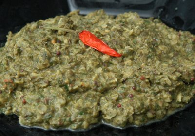

| Zutaten für 2-4 Personen: | |
| 4 EL | Chana Linsen |
| 2 EL | Sonnenblumenöl |
| 1 KL | Senfsamen |
| 1KL | Schwarzkümmel, ganz |
| 1 KL | getrocknete Chili (gemahlen) |
| 450 g | Rahmspinat, tiefgekühlt, aufgetaut |
| 1 KL | Ingwer, frisch gerieben |
| 1 KL | Korianderpulver |
| 1 KL | Kreuzkümmelpulver |
| 1 KL | Salz |
| 1/2 KL | Chilipulver |
| 2 EL | Zitronensaft |
| 5 | getrocknete Chilischoten (Garnitur) |
Chana Linsen 3 Stunden oder über Nacht in warmes Wasser einweichen. (Oder im Dampfkochtopf 8-10 Minuten auf dem 1. Ring kochen.)
Das Wasser abgiessen, dann die Linsen in eine Pfanne geben, mit frischem Wasser bedecken, zum Kochen bringen und 30 Minuten bei schwacher Hitze köcheln lassen.
Sonnenblumenöl in Wok oder Bratpfanne erhitzen, die Gewürze (Senfsamen, Schwarzkümmel, Chilipulver) unter ständigem Rühren anbraten, bis sich die Senfsamen dunkel verfärben.
Rahmspinat zugeben, unter die Gewürze mischen. Auf kleine Stufe zurück schalten.
Restliche Gewürze (Ingwer, Korianderpulver, Kreuzkümmelpulver, Salz, Chilipulver, Zitronensaft) zugeben, gut mischen, leicht köcheln.
Die gekochten Chana Linsen zum Spinat geben, darunter mischen, abschmecken.
Die getrockneten Chilischoten als Garnitur auf das Gericht legen und servieren.
Patricia Krummenacher, Indischer Kochkurs, 2006
Hat am 9.3.2008 hervorragend geschmeckt!
Kann mit Asiatischen Nudeln oder Basmati Reis als Hauptspeise serviert werden. RE 11 Jan 2011
Kam auch im März 2013 gut an. RE
@LINKBACK_TAG@ @WAKELOCK@